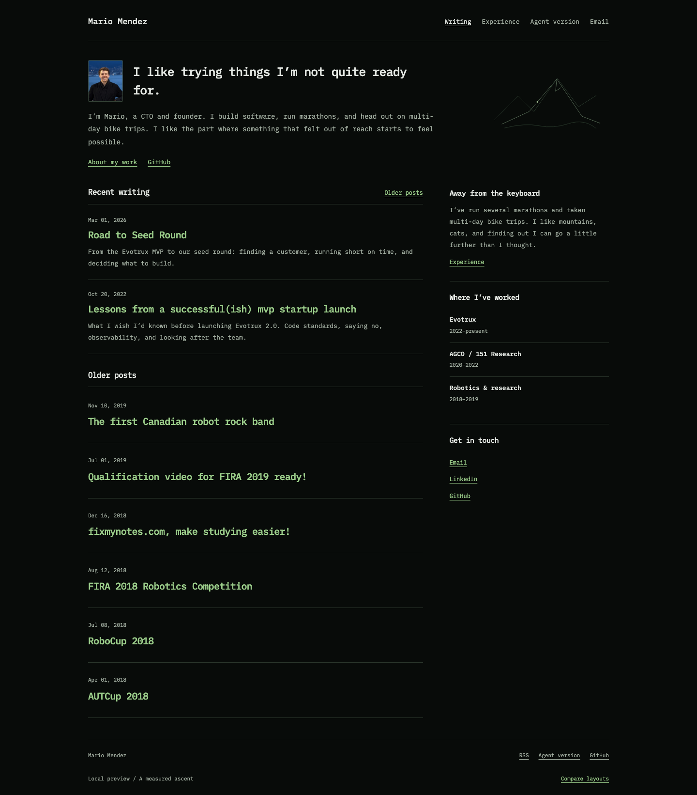
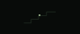
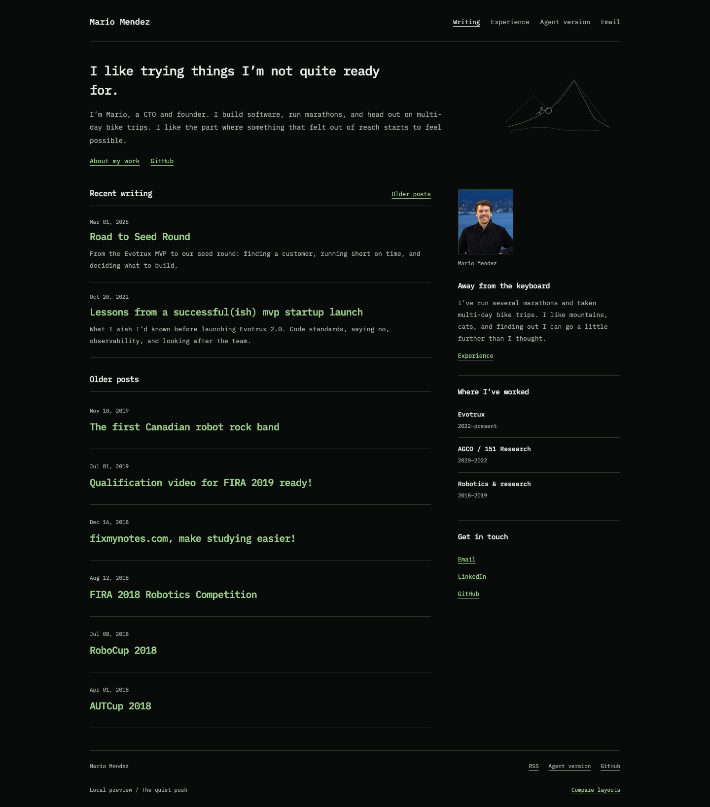
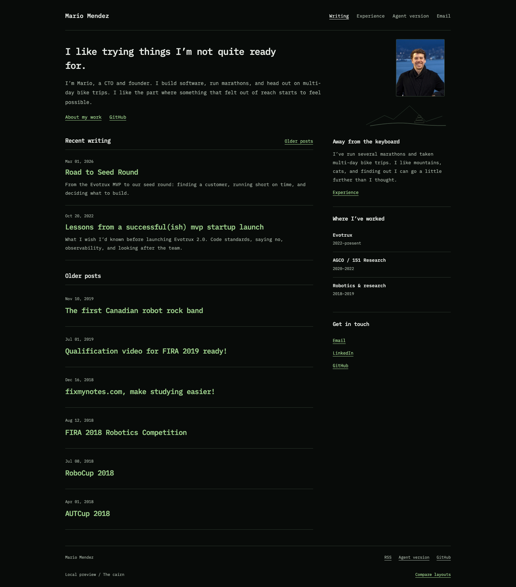
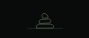

Keep the person. Quiet the mountain.
Three smaller treatments of ascent, using your original photo from the current site. The cyclist, road tracing, and animated limbs are gone. The writing, dark palette, and quiet agent tab remain.
Open a version and scroll gently. The movement is deliberately small: a point gaining a little height, a stone moving a few pixels, or a cairn gradually gaining emphasis.
A measured ascent
Photo beside the introduction

In the header
A small portrait makes the introduction personal. A faint mountain and one point suggest climbing. The header reduces it further to a few rising steps. No moving character.
Open A measured ascentLive scroll preview
The quiet push
Photo in the personal sidebar

In the header
A tiny figure leans into a stone on a simple slope. The header keeps only the stone and incline. Both move just a little as you read. The portrait gives the sidebar a human anchor.
Open The quiet pushLive scroll preview
The cairn
Photo leads the right side of the introduction

In the header
The portrait takes the illustration's former place. A small ridgeline and cairn sit beneath it. Reading adds a little emphasis to the stones; nothing travels across the screen.
Open The cairnLive scroll preview
My pick: The cairn
It gives your photo a proper place and lets the mountain idea become a small personal mark. The quiet push is the choice if the Sisyphus reference feels especially like you. A measured ascent makes the smallest change to the writing-first blog.
All three use the original img/kakto.jpg, in color. The photo file itself is unchanged. There are no automatic loops or big scroll effects; reduced-motion settings keep the artwork static.
These remain local design previews. The public site is unchanged.